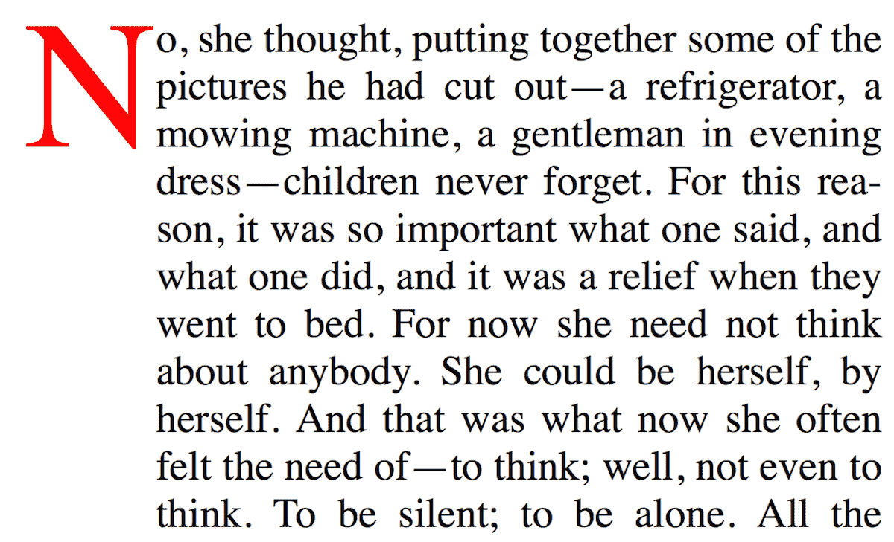
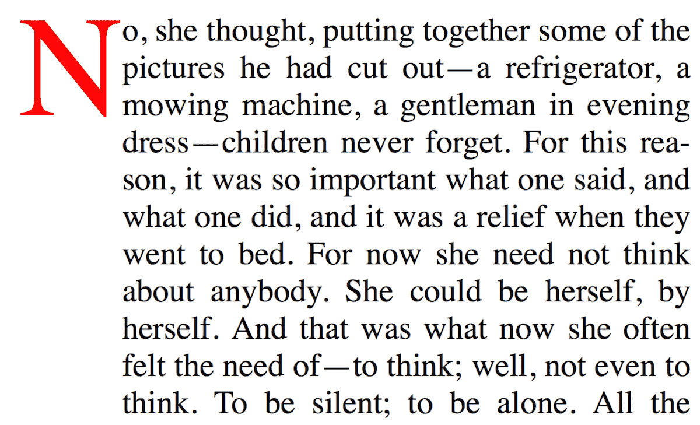

~CSS整形~modelは、［
容器の内側に~flowされる要素や~text
］を，何~行lかに折返すようにする整形を供する。
そのうち、［
行lの中での要素や~textの整形 ／
その`行内~基底~方向$における位置決め
／
行lの分断法
］は、 `CSS-TEXT-3$r にて述べられる。
この~moduleは、［
行lの中の要素や~text／ 行lたち
］に対する，`塊~flow方向$における位置決めについて述べる。
この位置決めは、`基底線$に相対的になることが多い。
また、最初の行lや埋没capを整形するための，特別な特色機能についても述べる。
これは `CSS2$r における~modelを拡張する。
◎
The CSS formatting model provides for a flow of elements and text inside of a container to be wrapped into lines. The formatting of elements and text within a line, its positioning in the inline progression direction, and the breaking of lines are described in [CSS-TEXT-3]. This module describes the positioning in the block progression direction both of elements and text within lines and of the lines themselves. This positioning is often relative to a baseline. It also describes special features for formatting of first lines and drop caps. It extends on the model in [CSS2].
次の特色機能は
~risk下
にあり、勧告候補の期間内に取下げられるかもしれません：
◎
The following features are at-risk, and may be dropped during the CR period:
`initial-letters-wrap$p ~prop
◎
the initial-letters-wrap property
1. 序論
この~moduleは、
CSS Inline Layout （行内~layout）~modelを定義する。
それは、 CSS2.1 に定義される~modelを置換し, 拡張する。
これは、まだまだ進捗-中の作業なので、実装者は CSS2.1 を参照するべきである。
◎
This module defines the CSS Inline Layout model, replacing and extending the model as defined in CSS2.1. It is very much a work-in-progress, and implementers should reference CSS2.1 for now.
`根~行内~box@
とは、`塊~容器$の中の`行内level$の内容（もしあれば）すべてを保持するために自動的に生成される，匿名~行内~boxである。
それにあてがえる~styleは、親の`塊~容器$から継承し得るものに限られる。
◎
The root inline box is an anonymous inline box which is automatically generated to hold all of the inline-level contents of a block container (if it has any). It inherits from its parent block container, but is otherwise unstyleable.
注記：
行l~boxは
— `css-multicol-1$r の`柱~box$の様に —
それが属する`整形~文脈$が生成する`断片化~容器$であり，~CSS`~box木$の一部ではない。
◎
Note: Line boxes, like column boxes [css-multicol-1], are fragmentation containers generated by their formatting context and are not part of the CSS box tree.
ここでの~layoutの多くの側面は、~font計量に依存する。
~OpenTypeには、［
~Latin／~Cyrillic／~Greek
］用, および~CJK用の関連する計量は存在するが、他の多くの書記体系~用のそれらは欠落している。
例えば，~OpenType~table内には~Hebrew用の視覚的な上端~計量は無い。
この~moduleが全世界で上手く働くためには、［
どの書記体系~用にも，関連する計量を供する~font
］が必要になる。
すなわち、~OpenTypeは そのような計量を許容する必要があり，~font設計者は 正確aな数値を供する必要がある。
◎
Many aspects of layout here depend on font metrics. While the relevant metrics exist in OpenType for Latin/Cyrillic/Greek and for CJK, they are missing for many other writing systems. For example, the visual top metric for Hebrew has no metric in the OpenType tables. For this module to work well for the world, we need fonts to provide the relevant metrics for all writing systems, and that means both that OpenType needs to allow such metrics and font designers need to provide accurate numbers.
2. 行高と基底線~整列
この節は、書き直し中にある。
pretty pictures を求むなら、規範的な~CSS定義については
`CSS2$r の
10.8 節
または
2002 年 作業草案
を~~参照のこと。
（ただし、古い~textは無視するように。
“その半分” は間違っている。
どの半分かを指定していないが、それが，これから決定するものである。）
CSS2 仕様が実装の指針とされるべきである。
◎
This section is being rewritten. Refer to section 10.8 of [CSS2] for the normative CSS definition or the 2002 Working Draft if you want pretty pictures. (But ignore the old text, half of it’s wrong. We’re not specifying which half, that’s to be determined.) The CSS2 specification should be used as the guideline for implementation.
どの基底線が必要とされるのか
CSSWG まで意見を寄せられたし
— 不要なもの，追加する必要のあるもの。
Github `859$issue を見よ。
◎
The CSSWG would like to know which baseline values are necessary: if any can be dropped, or any need to be added. See GitHub issue 859.
この~propは、~boxの
~text／`行内level$
の内容を整列するために利用される，
`支配的~基底線@
（
dominant baseline,
`CSS-WRITING-MODES-3$r
）を指定する。
それはまた、~boxの`整列~文脈$において`基底線~整列$に関与している各~box用に既定の`整列~基底線$を指示する。
各種~値の意味は：
◎
This property specifies the dominant baseline, which is the baseline used to align the box’s text and inline-level contents. It is also indicates the default alignment baseline of any boxes participating in baseline alignment in the box’s alignment context. Values have the following meanings:
◎
Equivalent to alphabetic in horizontal writing modes and in vertical writing modes when text-orientation is sideways, sideways-right, or sideways-left. Equivalent to central in vertical writing modes when text-orientation is mixed or upright.
ただし， SVG ~textにおいては、~glyphの原点（座標に基づく~glyphの位置決めに利用される）は常に，`縦組$における `central$v に対するときと同じに取扱われる。
◎
However, in SVG text, the origin point of glyphs (used for coordinate-based glyph positioning) is always handled as for central in vertical writing modes.
`text-bottom@v
~em~boxの下端を基底線として利用する。
◎
Use the bottom of the em box as the baseline.
`alphabetic@v
~alphabetic基底線を利用する。
◎
Use the alphabetic baseline.
`ideographic@v
~boxの~ideographic下側（ `ideographic under-side^en ）基底線を，親~boxのそれに揃える。
これは~OpenTypeにおける `ideo^c 基底線に対応する。
◎
Match the box’s ideographic under-side baseline to that of its parent. This corresponds to the ideo baseline in OpenType.
`middle@v
“middle” 基底線
— ~boxの~alphabetic基底線と ex-height 【~x-height？】の中間 —
を利用する。
◎
Use the “middle” baseline: halfway between the alphabetic baseline and the ex-height.
`central@v
~central基底線を利用する（~ascentと~descentの中間）。
◎
Use the central baseline (halfway between the ascent and descent).
`mathematical@v
~mathematical基底線を利用する。
◎
Use the mathematical baseline.
`hanging@v
~hanging（吊下げ）基底線を利用する。
◎
Use the hanging baseline.
`text-top@v
~em~boxの上端を基底線として利用する。
◎
Use the top of the em box as the baseline.
【†
上における “〜 基底線” は、~fontの基底線~tableのそれを指すと見られる。
】
◎
See [CSS-WRITING-MODES-3] for an introduction to dominant baselines.
`text-top^v ／ `text-bottom^v
の代わりに
`text-over^v ／ `text-under^v
【 “上面”, “下面” 】
にするべきか？
旧来の `vertical-align$p との一貫性を得るためには、これらの用語は~~避けた方がよいが。
GitHub `860$issue を見よ。
◎
Should be text-over and text-under instead of text-top and text-bottom, but maybe it’s better not to use those terms for consistency with legacy vertical-align. See GitHub issue 860.
`first^v, `last^v 値を追加する。
この~propにおいては、これらの値を他と組み合わせれるが、
`align/justify-self/content^p ~prop `CSS-ALIGN-3$r
では，そうできないことに注意。
`hyphen vs. space^en か何かに関して構文を~~揃えることは求められているのか？
GitHub `861$issue を見よ。
◎
Add first and last values. Note, in this property, these are combinatorial, whereas in the align/justify-self/content properties, it’s singular. Do we want to align the syntaxes wrt hyphens vs. spaces or what? See GitHub issue 861.
この略式~propは、行lの中で`行内level$の~boxが整列される方法を指定する。
値の意味は、後述するこの~propの下位propと同じである。
◎
This shorthand property specifies how an inline-level box is aligned within the line. Values are the same as for its longhand properties, see below.
作者は、下位propの代わりに この `vertical-align$p ~propを利用するべきである。
◎
Authors should use this property (vertical-align) instead of its longhands.
この~propは、各種`~box整列~prop$と同じ様に，~keyword
`first^v, `last^v
をとるようにされることになる
— § 基底線の整列： `baseline^v ~keywordと `first^v／`last^v 改変子
を見よ。
ここでの 問いかけは、これらの~keywordを `alignment-baseline$p に追加するべきか，あるいは新たな`下位prop$を作成して［
`first^v, `last^v どちらを選好するか
］をそれに保持させるべきかである。
◎
This property will gain first and last keywords, like in the box alignment properties, see CSS Box Alignment 3 §4.2 Baseline Alignment: the baseline keyword and first/last modifiers. The open question is whether they should be added to alignment-baseline or a new sub-property should be created to hold the first | last preference.
`行内level$の~boxのどの点が，親におけるどの点に整列されるかを指定する。
また、~boxが［
`align-self$p ／`justify-self$p
］で整列されるときの`整列~基底線$を選択する。
◎
Specifies what point of an inline-level box is aligned to what point in the parent. Also selects the alignment baseline of boxes aligned with align-self/justify-self.
この注釈文を，行内~整形~文脈でない`整列~文脈$を正しく取扱うよう~~整理する。
◎
Clean up this prose to correctly handle alignment contexts other than inline formatting contexts.
各種~値は以下の様に定義される：
◎
Values are defined below:
以下の定義における~boxは、［
`不可分な行内$に対しては`~margin~box$ ／
`置換され$ない行内に対しては先頭の（ `leading^en ）~box
］を指すとする。
また、行l~boxの行内-軸に基底線が無い場合は，`合成-$されるそれを~boxの基底線に利用するものとする。
◎
For the following definitions, the margin box is used for atomic inlines, the leading box for non-replaced inlines, and the baselines of the box are synthesized if missing in the line-box’s inline axis:
`baseline@v
~boxにおける［
親~boxの`支配的~基底線$と同じ種類の基底線
］を，親~boxの`支配的~基底線$に揃える。
◎
Use the dominant baseline choice of the parent. Match the box’s corresponding baseline to that of its parent.
`text-bottom@v
~boxの下端を，親~boxの`内容~区画$の下端に揃える。
◎
Match the bottom of the box to the bottom of the parent’s content area.
`alphabetic@v
~boxの~alphabetic基底線を，親~boxのそれに揃える。
◎
Match the box’s alphabetic baseline to that of its parent.
`ideographic@v
~boxの~ideographic文字~face下側（ `ideographic character face under-side^en ）基底線を，親~boxのそれに揃える。
◎
Match the box’s ideographic character face under-side baseline to that of its parent.
`middle@v
~boxの縦方向の中点を，［
親~boxの基底線から上方へ，親の~x-heightの半分の所
］に揃える。
【その中点と親~boxの小文字 x の中心を揃える】
◎
Align the vertical midpoint of the box with the baseline of the parent box plus half the x-height of the parent.
`central@v
~boxの~central基底線を，親~boxの~central基底線に揃える。
◎
Match the box’s central baseline to the central baseline of its parent.
`mathematical@v
~boxの~mathematical基底線を，親~boxのそれに揃える。
◎
Match the box’s mathematical baseline to that of its parent.
`text-top@v
~boxの上端を，親~boxの`内容~区画$の上端に揃える。
◎
Match the top of the box to the top of the parent’s content area.
`top@v
`整列-済み部分木$の上端と行l~boxの上端とを整列する。
◎
For the following definitions, the alignment subtree is as defined in [CSS2].
◎
Align the top of the aligned subtree with the top of the line box.
`center@v
`整列-済み部分木$の中央と行l~boxの中央とを整列する。
◎
Align the center of the aligned subtree with the center of the line box.
`bottom@v
`整列-済み部分木$の下端と行l~boxの下端とを整列する。
◎
Align the bottom of the aligned subtree with the bottom of the line box.
これらの値は、 `vertical-align$p 略式~propにおいては許容されない。
◎
These values are not allowed in the vertical-align shorthand.
2.2.2. 整列のズラシ： `baseline-shift^p 下位prop
◎名 `baseline-shift@p
◎値 `length-percentage$t | `sub$v | `super$v
◎初 `0^v
◎適
`行内level$の~box,
`~flex駒$,
`格子~駒$
◎
inline-level boxes, flex items, grid items
◎継 されない
◎百
`line-height$p の使用~値を基準にする
◎
refer to the used value of line-height
◎算
指定された~keyword ／ 算出された `length-percentage$t 値
◎
the specified keyword and/or a computed <length-percentage> value
◎順 文法に従う
◎ア 離散的
◎表終
この~propは、~boxが自身の整列点から上方へズラされる量を指定する。
`alignment-baseline$p 値が
`top$v ／ `bottom$v
のときは適用されない。
◎
This property specifies by how much the box is shifted up from its alignment point. It does not apply when alignment-baseline is top or bottom.
作者は、この~propの代わりに `vertical-align$p 略式~propを利用するべきである。
◎
Authors should use the vertical-align shorthand instead of this property.
各種~値の意味は：
◎
Values have the following meanings:
`length$t
指定された長さだけ，上げる（正の値の場合）か下げる（負の値の場合）。
◎
Raise (positive value) or lower (negative value) by the specified length.
`percentage$t
指定された［
`line-height$p に対する百分率
］だけ，上げる（正の値の場合）か下げる（負の値の場合）
◎
Raise (positive value) or lower (negative value) by the specified percentage of the line-height.
`sub@v
親の~boxの下付文字に適切な~offsetだけ下げる。
（~UAは、アリなら，親の~font~dataを利用して この~offsetを見出すべきである）。
◎
Lower by the offset appropriate for subscripts of the parent’s box. (The UA should use the parent’s font data to find this offset whenever possible.)
`super@v
親の~boxの上付文字に適切な~offsetだけ上げる。
（~UAは、アリなら，親の~font~dataを利用して この~offsetを見出すべきである）。
◎
Raise by the offset appropriate for superscripts of the parent’s box. (The UA should use the parent’s font data to find this offset whenever possible.)
~UAは、旧来の SVG 内容を~supportするために必要とされる場合には，追加で
~keyword
`baseline@v
を~supportしてよい
— これは `0^v に算出される。
◎
User agents may additionally support the keyword baseline as computing to 0 if is necessary for them to support legacy SVG content.
これは除去したいと考えられている
— それが必要とされるかどうか
SVG ~UAからの~feedbackを請う。
◎
We would prefer to remove this, and are looking for feedback from SVG user agents as to whether it’s necessary.
2.3. 行l間隔法： `line-height^p ~prop
◎名 `line-height@p
◎値 `normal$v | `number$vt || `length-percentage$vt
◎初 `normal^v
◎適 行内~box
◎継 される
◎百
`1em^v に相対的に算出される
◎
computed relative to 1em
◎算
指定された~keyword ／ 実数 ／ 算出された `length$t 値
◎
the specified keyword, a number, or a computed <length> value
◎順 文法に従う
◎ア 離散的
◎表終
この定義を埋めて， CSS2 を全部的に置換する。
◎
Fill out this definition so that it fully replaces CSS2.
百分率が長さに算出される事実は嫌らしい。
`3118$issue, `2165$issue
も見よ。
◎
The fact that percentages compute to lengths is annoying. See also href="https://github.com/w3c/csswg-drafts/issues/3118">Issue 3118 and Issue 2165.
これは、提案の大まかな草案であり、 CSSWG からはまだ認可されていない。
`3199$issue,
`Hyatt^en 氏からの~message,
`dbaron^en 氏の提案
における論点を見よ。
◎
This is a rought draft of a proposal, and has not yet been approved by the CSSWG. See discussion in Issue 3199, Hyatt’s message, and dbaron’s proposal.
この~propは、行l~boxを~sizeする手法を，したがって~textを成す各~行lの合間における間隔法を制御する。
◎
This property controls the method by which line boxes are sized, and thus the spacing between lines of text.
各種~値の意味は：
◎
Values have the following meanings:
`legacy@v
行内~boxは、自身の `line-height$p に基づいて，行l~boxの~sizingに寄与する
— `CSS2$r に定義されるように各~box辺に基づくのではなく。
各~行l~boxは、 `CSS2$r にて定義されるように~sizeされ，内容はそれらの中に位置される。
Quirks Mode `QUIRKS$r においては、`行内~box$を成す`断片$のうち［
~border, ~paddingとも 0，かつ
~textも`保全-済み空白$も直に包含しないもの
`CSS-TEXT-3$r
］は，行l~boxの~sizingにおいては無視される。
◎
The inline box contributes to the sizing of its line box based on its line-height, rather than based on its box edges, as defined in [CSS2]. In Quirks Mode [QUIRKS], any inline box fragment that has zero borders and padding and that does not directly contain text or preserved white space [CSS-TEXT-3] is ignored when sizing the line box.
注記：
この~modelでは、段落の中で~font計量が変化するたびに縦方向の `rhythm^en は崩れる。
【行l~boxの縦幅がまちまちになる。】
◎
Note: In this model, vertical rhythm is broken any time there is a change in font metrics within a paragraph.
`normal@v
行内~boxは、自身の`~margin~box$に基づいて，行l~boxの~sizingに寄与する
— `line-height$p に基づくのではなく。
`半-~leading$は`内容~box$を成す各~辺の内側に挿入され、［
~padding／~border／~margin
］区画には重合しない。
ただし，正の`半-~leading$は、`根~行内~box$のみに適用される。
負の`半-~leading$は、すべての行内~boxに適用され，内容~boxの~sizeを必要な分だけ~~削る。
◎
The inline box contributes to the sizing of its line box based on its margin box, rather than its line-height. Half-leading is inserted inside the content box edges, rather than overlapping the padding/border/margin areas. However, positive half-leading is only applied to the root inline box. Negative half-leading is applied to all inline boxes,- reducing the size of the content box as needed.
注記：
これは、一貫する行l間隔法を与えることになる
— `根~行内~box$上の`半-~leading$として、［
そのすべての子孫の~ascent／~descent（~leadingは含まない）を収容する大きさ
］に十分な量が追加されている限り。
ただし，行l~boxが~overflowする場合は、行lどうしが重合するのを避けるため，内容を収容するよう~~拡幅されることになる。
◎
Note: This will give consistent line spacing as long as there is some amount of leading added, such that the half-leading on the root inline is large enough to accommodate the unleaded ascent/descent of its descendants. The line box will grow, however, to accommodate content that would otherwise overflow, to avoid overlap between lines.
この~propは、塊~容器, 行内~boxのどっちに適用するベキか？
後者の事例では、個々の行内は，
“`pay attention to me^en”
とも
“`don’t pay attention to me^en”
とも言える【？】。
◎
Should this property apply to block containers or to inline boxes? In the latter case, an individual inline could say "pay attention to me" or "don’t pay attention to me".
これは 提案の大まかな草案であり、設計~批評や利用-事例が登録されるに伴い有意に変更されると見込まれる。
ここに挙げる~propやその値の名前は、追加されたり, 落とされたり, 改称され得る。
また、全体的な構文や挙動も変更され得るので、まだ実装しないこと。
CSSWG は、特にどの~font計量が対応する~keyword値を必要とするかについて，~feedbackを待っている。
◎
This is a rought draft of a proposal, and is likely to change significantly as design critiques and use cases are registered. Values and property names may be added, dropped, and/or renamed, and the overall syntax or behavior may change. Do not implement (yet). The CSSWG particularly invites feedback on which font metrics need corresponding keyword values.
~text連なりの基本的な事例において一貫する間隔法を確保するため、~CSSによる行l~layoutは，各~行lを成す~text内容の［
上, 下
］両者に~leadingを導入する。
加えて、~font計量の［
~ascent ／ ~descent
］自身も，［
代表的な限界域を［
上／下
］へ超える，ある種の文字や発音区別符
］を収容するために，最も共通する~glyph~sizeの［
上／下
］に余分の空間を含める。
これは、後続の~textが成す行lが互いに重合するのを防止する。
しかしながら，この余分の間隔法は、あらゆる［
視覚的な整列, 実質的な（目に見える）間隔法に対する制御
］に干渉する。
◎
To ensure consistent spacing in the basic case of running text, CSS line layout introduces leading both above and below the text content of each line. In addition, the ascend and descent font metrics themselves include extra space above and below the most common glyph sizes in order to accommodate occasional characters and diacritics which ascend or descend beyond the typical bounds. This prevents subsequent lines of text from overlapping each other. However, all this extra spacing interferes with visual alignment and with control over effective (visually-apparent) spacing.
各種 `leading-trim$p ~propは、塊を成す［
最初の行l／最後の行l
］の［
上／下
］における間隔法を精確に制御できるようにする。
さらには、~codeに直書きされた長さではなく，~font計量に依拠することにより、各種~fontにおいて内容を［
~sizeし直して／折返直して
］描画することになっても，間隔法を保守する。
◎
The leading-trim properties allow controlling the spacing above and below the first and last lines of a block. It allows precise control over spacing; moreover, by relying on font metrics rather than hard-coded lengths, it allows content to be resized, rewrapped, and rendered in a variety of fonts while maintaining that spacing.
共通的な問題は縦方向の中央寄せである。
~text容器を ある~iconに対し縦方向に中央寄せにすることは容易であるが、~Latin~textの視覚的な境界は［
~ascent, ~descent
］ではなく［
`~cap-height$, ~alphabetic基底線
］なので，意図される視覚的~効果が得られないことが多い。
◎
A common problem is vertical centering. It’s easy to vertically center the text container to an icon, but because the visual boundaries of Latin text are the cap height and the alphabetic baseline, rather than the ascent and descent, this often doesn’t yield the intended visual effect.
【例示用の画像（まだ無い）】
~textの［
上端／下端
］を測定した結果は等しくなっても、視覚的な限界域を測定した結果は視覚的に中央寄せにされない。
◎
Measuring to the top/bottom of the text may yield equal results, but measuring to the visual bounds shows that it is not visually centered.
~textを視覚的に中央寄せにするためには、［
`~cap-height$／~alphabetic基底線
］が~textの［
上端／下端
］辺を成すと見做すことが必要とされる。
◎
To center the text visually, it’s necessary to asume the cap height and alphabetic baseline as the top and bottom edges of the text, respectively.
【例示用の画像（まだ無い）】
［
~ascent／~descent
］の代わりに［
`~cap-height$ ／~alphabetic基底線
］を測定して，それらの距離を等しくすることで、~textを視覚的に中央寄せにする。
◎
Measuring to the cap height / alphabetic baseline instead of the ascent / descent and equalizing those distances visually centers the text.
`leading-trim$p を利用して［
`~cap-height$の上, ~alphabetic基底線の下
］にある間隔を剥ぎ取ることにより、~boxを中央寄せにしたとき
— どの~fontを利用して描画されるかに関わらず，依拠-可能に —
~textを実際に中央寄せにする。
◎
By using leading-trim to strip out the spacing above the cap height and below the alphabetic baseline, centering the box actually centers the text; and does so reliably, regardless of what font is used to render it.
【例示用の画像（まだ無い）】
`~cap-height$は~fontごと異なっていても、場当たり的な数ではなく~fontの計量を利用することにより，~fontが変更されても~layoutの意向は満たされる。
◎
Even though different fonts have different cap heights, by using the font’s metric rather than a magic number, the layout intention is met even as the font is changed.
`leading-trim-over$p ~propは、~boxの内容~辺と~boxの~text内容とがより良く合致するように，塊~容器~内の最初の行l~boxの`行-上面$側を削る。
この~propは、塊~容器の`整形される最初の行l$のみに影響する
— そのような行lが無い場合、効果は無い。
各種 値の意味は：
◎
The leading-trim-over property trims the line-over side of the first line box in the block container to better match the box’s content edge to its text content. The property affects only the first formatted line of the block container; if there is no such line, it has no effect. Values have the following meanings:
`normal@v
`半-~leading$†は、他の行lと同じように，最初の行lに適用される。
【†行-上面~側の。以下同様】
◎
Half-leading is applied over the first line, just as for every other line.
`text@v
`半-~leading$は最初の行lには適用されない
— 行l~boxの上端は`根~行内~box$の~text-top計量に設定される。
◎
Half-leading is not applied over the first line; the top of the line box is set to the text-top metric of the root inline box.
`cap@v
`半-~leading$は最初の行lには適用されない
— 行l~boxの上端は`根~行内~box$の`~cap-height$ 計量に設定される。
◎
Half-leading is not applied over the first line; the top of the line box is set to the cap-height metric of the root inline box.
`ex@v
`半-~leading$は最初の行lには適用されない
— 行l~boxの上端は`根~行内~box$の~ex-height計量に設定される。
◎
Half-leading is not applied over the first line; the top of the line box is set to the ex-height metric of the root inline box.
`ideographic@v
`半-~leading$は最初の行lには適用されない
— 行l~boxの上端は`根~行内~box$の
~ideographic上端（ `idtp^c ）計量に設定される。
◎
Half-leading is not applied over the first line; the top of the line box is set to the ideographic top (idtp) metric of the root inline box.
`ideographic-ink@v
`半-~leading$は最初の行lには適用されない
— 行l~boxの上端は`根~行内~box$の~ideographic文字~face上端（ `icft^c ）計量に設定される。
◎
Half-leading is not applied over the first line; the top of the line box is set to the ideographic character face top (icft) metric of the root inline box.
`leading-trim-over$p ~propは、~boxの内容~辺と~boxの~text内容とがより良く合致するように，塊~容器~内の最初の行l~boxの`行-下面$†側を削る。
この~propは、塊~容器の`整形される最初の行l$††のみに影響する
— そのような行lが無い場合、効果は無い。
各種 値の意味は：
◎
The leading-trim-over property trims the line-over side of the first line box in the block container to better match the box’s content edge to its text content. The property affects only the first formatted line of the block container; if there is no such line, it has no effect. Values have the following meanings:
`半-~leading$†は、他の行lと同じように，最初の行lに適用される。
【†行-下面~側の。以下同様】
◎
Half-leading is applied over the first line, just as for every other line.
`text@v
`半-~leading$は最初の行lには適用されない
— 行l~boxの上端は`根~行内~box$の~text-top計量に設定される。
◎
Half-leading is not applied over the first line; the top of the line box is set to the text-top metric of the root inline box.
`alphabetic@v
`半-~leading$は最初の行lには適用されない
— 行l~boxの上端は`根~行内~box$の~alphabetic基底線~計量に設定される。
◎
Half-leading is not applied over the first line; the top of the line box is set to the alphabetic baseline metric of the root inline box.
`ideographic@v
`半-~leading$は最初の行lには適用されない
— 行l~boxの上端は`根~行内~box$の~ideographic下端（ `ideo^c ）計量に設定される。
◎
Half-leading is not applied over the first line; the top of the line box is set to the ideographic bottom (ideo) metric of the root inline box.
`ideographic-ink@v
`半-~leading$は最初の行lには適用されない
— 行l~boxの上端は`根~行内~box$の~ideographic文字~face上端（ `icfb^c ）計量に設定される。
◎
Half-leading is not applied over the first line; the top of the line box is set to the ideographic character face top (icfb) metric of the root inline box.
この~propは、［
`leading-trim-over$p, `leading-trim-under$p
］用の`略式~prop$である。
［
`cap^v ／ `ex^v
］が指定された場合、 `leading-trim-over$p はその値に設定され，
`leading-trim-under$p は `alphabetic^v に設定される
— 他の場合、両`下位prop$とも指定された~keywordに設定される。
◎
This property is a shorthand of leading-trim-over and leading-trim-under. If cap or ex is specified, leading-trim-over is set to that value and leading-trim-under is set to alphabetic; otherwise both longhands are set to the specified keyword.
この~propは、`行内~box$の`内容~区画$の`論理~縦幅$をどう測定するか, その内容をどう整列するかを指定する（これは、~boxの内容の~sizeや位置に対する効果は無い）。
各種~値の意味は：
◎
This property specifies how the logical height of the content area of an inline box is measured and how it is aligned with its contents. (It has no effect on the size or position of the box’s contents.) Values have the following meanings:
`normal@v
`行内~box$の`内容~区画$は、
CSS2§10.6.1
にて指定されるように，内容を成す（場合によっては仮の）~textが収まるように~sizeされ, 位置される。
◎
The content area of the inline box is sized and position to fit its (possibly hypothetical) text as specified in CSS2§10.6.1.
`stretch@v
`行内~box$の`内容~区画$の`論理~縦幅$は、その行l~boxが~sizeされた後に，行l~boxの中に`収まるよう伸張する$ように計算される
— 行内~boxは、自身の各`~margin辺$が行l~boxの各~辺に一致するよう位置される。
◎
Once the line box has been sized, the final logical height of the inline box’s content area is calculated as the stretch fit into the line box, and it is positioned such that its margin edges coincide with the line box’s edges.
今のうちに、 `normal$v を もっと精確に定義して, ~~見合うものに改称して，場合によっては 必要とされそうな他の値を導入したい。
◎
We might want to use this opportunity to more precisely define normal, rename it to match, and possibly introduce any other values that may seem necessary.
4. 先頭字
【
この節に現れる`始端$／`終端$は、他が指定されない限り，`行内-軸$のそれを指す。
】
非~西欧~用字系における埋没-頭字の例を寄せていただけるとありがたい
— とりわけ
~Arabic, ~Indic
の用字系における。
◎
The editors would appreciate any examples of drop initials in non-western scripts, especially Arabic and Indic scripts.
4.1. 先頭字 序論
~INFORMATIVE
~textの新たな節を開始する，大きい装飾的な字l（ `letter^en ）は、印刷が発明される前から利用されてきた。
事実、それらは，小文字による字lの登場以前から利用されている。
【字lとは、`~typographic字l単位$の略称。】
◎
Large, decorative letters have been used to start new sections of text since before the invention of printing. In fact, their use predates lowercase letters entirely.
4.1.1. 埋没-先頭字
`埋没~頭字@
（ `dropped initial^en — “`drop initial^en”, “`drop cap^en” とも呼ばれる）とは、［
その`基底線$が，段落の最初の`基底線$より何~行l~分か低い
］ような，［
段落の開始における，通例より大きい字l
］【であって, その~cap-heightが後続する文字たちの~cap-heightに揃えられるもの】
である。
埋没-頭字の~sizeは、通例的にはそれが占める行l~数により指示される。
二行分／三行分
を占める埋没-頭字はごく共通的~にある。
◎
A dropped initial (or “drop cap”) is a larger-than-usual letter at the start of a paragraph, with a baseline at least one line lower than the first baseline of the paragraph. The size of the drop initial is usually indicated by how many lines it occupies. Two- and three-line drop initials are very common.
`Dropcap-E-acute-3line^dgm
図 1.
E acute による三行分の埋没-頭字。
埋没-頭字の`~cap-height$と，~~後続する~textの~cap-heightとが整列するので、~accentは段落の上へ拡幅される。
◎
Three-line drop initial with E acute. Since the cap-height of the drop initial aligns with the cap-height of the main text, the accent extends above the paragraph.
`埋没~頭字$の正確な~size／位置は，その~glyphの整列に依存する。
埋没cap上の基準~点は、~text内の基準~点と精確に整列されるモノトスル。
埋没-頭字~用の整列の拘束は、書記体系に依存する。
◎
The exact size and position of a dropped initial depends on the alignment of its glyph. Reference points on the drop cap must align precisely with reference points in the text. The alignment constraints for drop initials depend on the writing system.
西欧~用字系においては、上端~基準~点は［
先頭字／
~textの最初の行l
］の`~cap-height$になる。
下端~基準~点は［
先頭字の~alphabetic基底線／
~textの N 本目の行lの`基底線$
］になる。
次の図に，単純な二行分の埋没capを示す。
◎
In Western scripts, the top reference points are the cap height of the initial letter and of the first line of text. The bottom reference points are the alphabetic baseline of the initial letter and the baseline of the Nth line of text. Figure 2 shows a simple two-line drop cap, with the relevant reference lines marked.
`Dropcap-lines^dgm
図 2.
二行分の埋没cap。
緑色~線は `基底線$／
赤色~線は ~cap-height ／
水色~線は ~ascender。
◎
Two-line drop cap showing baselines (green lines), cap-height (red line), and ascender (cyan line).
漢字から派生した用字系においては、先頭字は最初の行l上の~glyphの`塊-始端$辺から
N 本目の行l上の~glyphの`塊-終端$辺まで拡幅される。
◎
In Han-derived scripts, the initial letter extends from the block-start edge of the glyphs on the first line to the block-end edge of the glyphs on the Nth line.
`Initial-2line-JapaneseVertical^dgm
図 3.
縦組における二行分の埋没-頭字
◎
Two-line drop initial in vertical writing mode
ある種の~Indic用字系においては、上端~整列点は吊下げ基底線になり,
下端~整列点は text-after-edge になる。
◎
In certain Indic scripts, the top alignment point is the hanging baseline, and the bottom alignment point is the text-after-edge.
`Devangari-Initial^dgm
図 4.
吊下げ基底線に整列された~Devanagari`先頭字$。
整列点は赤色で示されている。
◎
Devangari initial letter aligned with hanging baseline. Alignment points shown in red.
4.1.2. 沈込み先頭字
~textの最初の行lに整列しない~styleによる埋没-頭字もある。
`沈込み頭字@
（ `sunken initial^en — “`sunken cap^en” とも呼ばれる）
は、最初の`基底線$の下へ沈込しつつ, ~textの最初の行lから上へ拡幅する。
◎
Some styles of drop initials do not align with the first line of text. A sunken initial (or “sunken cap”) both sinks below the first baseline, and extends above the first line of text.
`SunkenCapA^dgm
沈込み~cap。
字lは二行分~埋没するが、その~sizeは三行分になる。
◎
Sunken cap. The letter drops two lines, but is the size of a three-line initial letter.
4.1.3. 持上げ先頭字
`持上げ頭字@
（ `raised initial^en — “`raised cap^en”, “`stick-up cap^en” とも呼ばれる）は、最初の~text`基底線$まで
“沈込する” 。
◎
A raised initial (often called a “raised cap” or “stick-up cap”) “sinks” to the first text baseline.
注記：
適正に持上された頭字には、単に最初の字lの~font~sizeを増やす以上にいくつか利点がある。
まず、段落の残りの部分における行l間隔法は 改められないまま，~textは大きな~descenderの周りに排他されることになる。
また、持上げ頭字の~sizeが行lの整数倍として定義された場合，暗黙的な基底線~格子も保守される。
◎
Note: A proper raised initial has several advantages over simply increasing the font size of a first letter. The line spacing in the rest of the paragraph will not be altered, but text will still be excluded around large descenders. And if the size of raised initial is defined to be an integral number of lines, implicit baseline grids can be maintained.
`RaisedCap^dgm
持上げ~cap。
先頭字は、三行分~頭字の~sizeであるが、沈込しない。
◎
Raised cap. The initial letter is the size of a 3-line initial, but does not drop.
4.2. 先頭字の選択-法
~INFORMATIVE
先頭字は、概して単独の字lである
— 利用者からは単独の~typographic単位に見える，約物や文字~並びも含まれるが。
`SELECT$r, `CSS-PSEUDO-4$r にて定義される `first-letter$pe 疑似要素を利用すれば、`先頭字$として整形される文字（たち）を選択できる。
◎
Initial letters are typically a single letter, although they may include punctuation or a sequence of characters which are perceived by the user to be a single typographic unit. The ::first-letter pseudo-element, defined in [SELECT] and [CSS-PSEUDO-4], can be used to select the character(s) to be formatted as initial letters.
作者は、先頭字に含ませる文字について更なる制御が必要なとき, あるいは
先頭字の整形を［
置換~要素／複数の単語
］にも適用したいと求めるならば、`塊~容器$の最初の`行内level$の子に
`initial-letters$p ~propを適用することもできる。
◎
Authors who need more control over which characters are included in an initial letter, or who want to apply initial-letters formatting to replaced elements or multiple words can alternately apply the initial-letters property to the first inline-level child of a block container.
<p>当段落には 埋没される “当” がある。
<p><img alt="ここ" src="illuminated-h.svg">には 飾り付けられる “ここ” がある。
<p><span>段落~始めの単語たち</span>にも先頭字~styleをあてがうことができる。
◎
<p>This paragraph has a dropped “T”.
<p><img alt="H" src="illuminated-h.svg">ere we have an illuminated “H”.
<p><span>Words may also</span> be given initial letter styling at the beginning of a paragraph.
`first-letter$pe 疑似要素が利用されたときは、最初の字lの前後の約物も選択し，それらの文字も先頭字に含まれることに注意。
◎
Note that since ::first-letter selects punctuation before or after the first letter, these characters are included in the initial-letters when ::first-letter is used.
`initial-letter-punctuation-quote^dgm
`first-letter$pe 疑似要素は、 "M" に加えて引用符も選択する。
◎
The ::first-letter pseudo-element selects the quotation mark as well as the “M”.
この挙動を任意選択で外す仕方もあるべきか？
Github `310$issue を見よ。
◎
Should there be a way to opt out of this behavior? See Github Issue 310.
4.3. 先頭字の作成-法： `initial-letters^p ~prop
◎名 `initial-letters@p
◎値
`normal$v | `number$vt `integer$vt | `number$vt && [ `drop$v | `raise$v ]?
◎初 `normal$v
◎適
ある種の行内level~box ／
`first-letter$pe ~box ／
`内側に位置された$ `marker$pe ~box
（`注釈文を見よ$）
◎
certain inline-level boxes and ::first-letter and inside ::marker boxes (see prose)
◎継 されない
◎百 受容しない
◎算 ~keyword `normal$v ／ 実数と整数の組
◎
the keyword normal or a number paired with an integer
◎順 文法に従う
◎ア 離散的
◎表終
この~propを改称することについて（および，この節の他の内容）、現在
討議中にある。
◎
Renaming this property (and the others in this section) is currently under discussion.
この~propは、［
埋没／持上げ／沈込み
］`先頭字$が［
`占める行l数$, `沈込する行l数$
］を指定する。
◎
This property specifies the size and sink for dropped, raised, and sunken initial letters as the number of lines spanned.
例えば次の~codeは、 `h2^e の直後にある段落に，二行分の埋没~先頭字を作成することになる：
◎
For example, the following code will create a 2-line dropped initial letter at the beginning of each paragraph that immediately follows a second-level heading:
h2 + p::first-letter { initial-letters: 2; }
この~propは、次に挙げる値をとる：
◎
It takes the following values:
`normal@v
特別な先頭字~効果はなし。
~textは通常通りに挙動する。
◎
No special initial-letters effect. Text behaves as normal.
`number$t
先頭字の~sizeを，それが
`占める行l数@
により定義する。
1 未満の値は 無効とする。
◎
This first argument defines the size of the initial letter in terms of how many lines it occupies. Values less than one are invalid.
`integer$t
省略可能なこの引数は、先頭字が
`沈込する行l数@
を定義する。
値 1 は `持上げ頭字$を指示する。
1 を超える値は `沈込み頭字$を指示する。
1 未満の値は 無効とする。
◎
This optional second argument defines the number of lines the initial letter should sink. A value of 1 indicates a raised initial; values greater than 1 indiciate a sunken initial. Values less than one are invalid.
`raise@v
先頭字が`沈込する行l数$は、 1 に算出される。
◎
Computes to an initial letter sink of 1.
`drop@v
先頭字が`沈込する行l数$は、先頭字が`占める行l数$を超えない~~最大の正~整数に算出される。
◎
Computes to an initial letter sink equal to the initial letter size floored to the nearest positive whole number.
`沈込する行l数$用の値が省略された場合、 `drop$v があるものと見做される。
◎
If the initial letter sink value is omitted, drop is assumed.
`normal$v 以外の値は、影響される~boxを
`先頭字~box@
にする
— それは、`~flow内$にある`行内level~box$であり，特別な~layoutの挙動も伴う。
◎
Values other than normal cause the affected box to become an initial letter box, which is an in-flow inline-level box with special layout behavior.
`initial-letters$p
の用例をいくつか示す：
◎
Here are some examples of initial-letters usage:
高さ三行分, 深さ一行分を表現する`持上げ頭字$：
◎
Represents a raised initial 3 lines high, 1 line deep.
`InitialLetter31^dgm
`initial-letters$p: `2.51 3^v
先頭字の~sizeは、一行分の整数倍でない。
この事例では、下端のみが整列される。
◎
The size of the initial letter does not have to be an integral number of lines. In this case only the bottom aligns.
`non-integer-initial^dgm
`initial-letters^p と他の~CSS~propを併用すれば、~textに
“隣接する先頭字”
を作成できる：
◎
In conjunction with other CSS properties, initial-letters can be used to create “adjacent initial letters,” where the initial letter is adjacent to the text:
どの文字を`先頭字$として~styleできるかについての制御を 作者にもっと与えるため, および
複数~文字からなる先頭字（最初の単語や句を~styleするためなど）の可能性も許容するため、
`initial-letters$p ~propは
— ~CSS定義な `first-letter$pe 疑似要素のみならず —
最初の行lの始端に配置される［
`内側に位置された$ `marker$pe 疑似要素／行内level~box
］にも適用される。
特定的には、 `initial-letters^p は，次をすべて満たす~boxに適用される：
◎
To give authors more control over which characters can be styled as an initial letter and to allow the possibility of multi-character initial letters (such as for first word or first phrase styling), the initial-letters property applies not just to the CSS-defined ::first-letter pseudo-element, but also to inside-positioned ::marker pseudo-elements and inline-level boxes that are placed at the start of the first line. Specifically, initial-letters applies to＼
`行内level~box$である
— ［
`first-letter$pe ／ `marker$pe
］によるそれも含めて。
◎
any inline-level box—including any such ::first-letter or ::marker box—＼
親~boxの最初の子である。
◎
that is the first child of its parent box and＼
先祖のうち, ~boxの`包含塊$の子孫であるものは、どれも，次を満たす
⇒＃
前 2 項の条件を満たす, かつ
`initial-letters^p の`算出d値$は `normal$v である
◎
whose ancestors (if any) that are descendants of its containing block are all first-child inline boxes that have a computed initial-letters value of normal.
次の例においては、［
`span^e, `em^e, `b^e
］要素が 上述した “始端に配置される行内level~box” に該当し， `strong^e 要素はそうでない：
◎
For example, the <span>, <em>, and <b> elements in the following example are "first-most inline-level descendants" of the <p>, but the <strong> element is not:
`initial-letters$p ~propの効果は `em^e に限られる。
`b^e 用の~styleは無視される
— その先祖がすでに`先頭字$として~styleされているので。
`strong^e 用の~styleは無視される
— それは 2 個目の同胞なので。
◎
The initial-letters property will take effect only on the <em>. The styling on <b> is ignored, as it has an ancestor already styled as an initial letter; and the styling on <strong> is ignored because it is a second sibling.
描画される結果は、次のようになるであろう：
◎
The result might be rendered as
この句
は、特別に~styleされている。残りの~textは定例の~styleである…
二行分の先頭字を伴う~text
◎
text with two-line initial-letter
行内level~boxが［
双向性~並替え／行内levelの他の内容が先行している
］ことに因り，行lの`始端$に位置しない場合、それに適用される `initial-letters$p の`使用~値$は `normal$v になり，~boxは`先頭字$として整形されなくなるとする。
◎
If initial-letters is applied to an inline-level box that is not positioned at the start of the line due to bidi reordering or which is otherwise preceded by other inline-level content, its used value is normal, and it is not formatted as an initial letter.
`initial-letters$p ~propの効果は、［
`~ruby$基底~容器~boxの子 ／ `~ruby$容器~box
］に対しては，定義されない。
◎
The effect of the initial-letters property is undefined on children of ruby base container boxes and on ruby container boxes.
注記：
`initial-letters$p ~propは、［
`float$p が `none^v でない ／
`position$p が `static^v でない
］要素には適用できない。
これらの値は、 `display$p を `block^v に算出させるので。
◎
Note: The initial-letters property cannot apply to any element whose float is not none or position is not static, because these values cause its display to compute to block.
4.4. 先頭字の整列： `initial-letters-align^p ~prop
先に言及したように、先頭字の整列は，利用される用字系に依存する。
`initial-letters-align$p
~propは、適正な整列を指定するときに利用できる。
◎
As mentioned earlier, the alignment of initial letters depends on the script used. The initial-letters-align property can be used to specify the proper alignment.
この~propは、`先頭字$を
~sizeする／位置する
ために利用される整列点を指定する。
整列点の集合が 2 つ必要とされる：
`先頭字$の
( `上面$, `下面$ )
整列点は、周囲の~textの対応する
( `上面$, `下面$ )
整列点に合致される。
◎
This property specifies the alignment points used to size and position an initial letter. Two sets of alignment points are necessary: the over and under alignment points of the initial letter are matched to corresponding over and under points of the surrounding text.
各種~値の意味は：
◎
Values have the following meanings:
`alphabetic@v
周囲の~textの
( ~alphabetic, ~cap-height )
基底線を利用して，`先頭字$を整列する。
◎
Use the alphabetic and cap-height baselines of the surrounding text to align the initial letter.
`ideographic@v
周囲の~textの
~ideographic文字~faceの
( 下端~辺, 上端~辺 )
基底線を利用して，`先頭字$を整列する。
◎
Use the ideographic character face bottom and top edge baselines of the surrounding text to align the initial letter.
`hebrew@v
周囲の~textの
( ~alphabetic, （まだ机上のものでしかない）~Hebrew~hanging )
基底線を利用して，`先頭字$を整列する。
◎
Use the alphabetic and (as yet theoretical) hebrew hanging baseline of the surrounding text to align the initial letter.
`hanging@v
周囲の~textの
( ~alphabetic, ~hanging )
基底線を利用して，`先頭字$を整列する。
◎
Use the alphabetic and hanging baselines of the surrounding text to align the initial letter.
`border-box@v
`先頭字$~boxの
( `行-上面$, `行-下面$ )
~border辺を，
( `上面$, `下面$ )
整列点として利用する。
◎
Use the initial letter box’s line-over and line-under border edges as the over and under alignment points, respectively.
~Hebrew “~hanging” 基底線に適正な~typographic用語は，何かある？
◎
Is there a proper typographic term for the hebrew “hanging” baseline?
縦組における二行分の埋没~頭字（図 3 の縦組の例）は、次の~codeで可能になるであろう：
◎
The vertical writing mode example from Figure 2 could be coded as:
`border-box$v が指定された場合を除いて、`先頭字$の各 整列点は、その内容から自動的に決定される：
◎
Except when border-box is specified, the alignment points of the initial letter are automatically determined from its contents:
`先頭字$が`不可分な行内$ならば、内容~boxの
( `上面$, `下面$ )
辺を利用する。
◎
If the initial letter is an atomic inline, use its over and under content-box edges.
他の場合，`先頭字$が［
Han, Hangul, Kana, Yi
］いずれかの`~Unicode用字系$に属する文字を包含するならば、~ideographic文字~faceの
( 下端~辺, 上端~辺 )
基底線を利用する。
◎
Else if the initial letter contains any character from the Han, Hangul, Kana, or Yi Unicode scripts, use the ideographic character face bottom and top edge baselines.
他の場合，`先頭字$が［
Devanagari, Bengali, Gurmukhi
］いずれかの`~Unicode用字系$に属する文字を包含するならば、［
~hangingと~alphabetic
］基底線を利用する。
◎
Else if the initial letter contains any character from the Devanagari, Bengali, and Gurmukhi Unicode scripts, use the hanging and alphabetic baselines.
他の場合，`先頭字$が
~Hebrew `~Unicode用字系$に属する文字を包含するならば、~ideographic文字~faceの
( 下端~辺, 上端~辺 )
基底線を利用する。
◎
Else if the initial letter contains any character from the Hebrew Unicode scripts, use the ideographic character face bottom and top edge baselines.
他の場合、
( ~alphabetic, ~cap-height )
基底線を利用する。
◎
Else use the alphabetic and cap-height baselines.
Tamil や Telugu など，明示的な~hanging基底線を持たない
South Asian 用字系に適正な整列は何か？
GitHub `864$issue を見よ。
◎
What is the proper alignment for South Asian scripts that do not have the explicit hanging baseline, such as Tamil or Telugu? See GitHub issue 864
注記：
この~propにおける各~keywordの順序付けは、`先頭字$の整列点を明示的に指定できるようにするため，
`border-box$v が
[ border-box | alphabetic | ideographic | hebrew | hanging ]
に展開される事例においては，固定される。
【？】
◎
Note: The ordering of keywords in this property is fixed in case border-box is expanded to [ border-box | alphabetic | ideographic | hebrew | hanging ] to allow explicitly specifying the initial letter’s alignment points.
より良い既定の挙動を供するため、~UAは，自身の既定の~UA~stylesheetに 次の規則を含めるモノトスル：
◎
In order to provide the better behavior by default, UAs must include in their default UA style sheet the following rules:
これは、最も共通的な言語間転写~system（ `cross-linguistic transcription system^en ）しか受持っていない。
他の, あるいは全~用字系~tagを~UA~stylesheetに含めるべきか？
◎
This only covers the most common cross-linguistic transcription systems. Should we include any other / all script tags in the UA style sheet?
4.5. 先頭字の~layout
`先頭字~box$は、次の 2 種に大別される：
◎
There are two types of initial letter boxes: those that arise from non-replaced inline boxes and those that arise from atomic inlines.
`行内~先頭字@
`可分な行内$（`置換され$ない行内~box）から発生するもの。
~boxとその内容は，それが生じた行lと同じ`行内~整形~文脈$に関与し、期待される~sizingと整列を与えるため，いくつもの特別な規則が適用される。
◎
For the non-atomic inline initial letter, the box and its contents participate in the same inline formatting context as the line on which it occurs, and a lot of special rules apply to give the expected sizing and alignment.
`不可分な先頭字@
`不可分な行内$から発生するもの。
不可分な行内は［
`置換され$るか，自身の内容~用に`独立な整形~文脈$を確立する
］ので、~boxの［
~sizing, ~boxの中での内容の~layout
］は，（`塊-軸$における，`自動的~size$は別として）通例の規則に従う。
それは主に、~boxの位置決めを特別にするためにある。
◎
For an atomic initial letter, however, which is either a replaced element or which establishes an independent formatting context for its contents, the sizing of the box (aside from its automatic size in the block axis) and layout of the contents within the box follows the usual rules: it is primarily the positioning of the box which is special.
◎
All properties that apply to an inline box also apply to an inline initial letter except for vertical-align and its sub-properties, font-size, line-height, line-sizing, and inline-sizing. Additionally, all of the sizing properties and box-sizing also apply to initial letters, (see [css-sizing-3]).
◎
All properties that apply to an atomic inline also apply to the atomic inline when styled as an initial letter, except for vertical-align and its sub-properties.
4.5.2. ~margin, ~border, ~padding
他の~boxと同じく、先頭字も［
~margin, ~padding, ~border
］で~styleできる。
`initial-letters-align$p が `border-box^v でない限り，その縦方向の
整列／~sizing
には影響されない一方、実質的な排他~区画（および対応する~margin区画）は影響される。
◎
Initial letters can be styled with margins, padding, and borders just like any other box. Unless initial-letters-align is border-box, its vertical alignment and sizing are not affected; however the effective exclusion area is (and corresponds to the margin area).
`box-sizing$p を正しく取扱うよう書き直す。
◎
Reword that to handle box-sizing correctly.
~borderも~paddingも 0 の場合、先頭字は字詰され得る（後述）。
◎
When padding and borders are zero, the initial letter may be kerned; see below.
4.6. 先頭字の~font~sizing
`行内~先頭字$に対しては、`先頭字$を成す内容の~sizingに利用される~font~size（使用~値）は，［
先頭字の `initial-letters-align$p に指定された整列点を起点にする下で，先頭字の `initial-letters$p に指定された`~size$を充足する
］ように計算される。
この`使用~値$の計算は、算出d値, ~font計量のみに基づき，~layoutは要求されないことに注意。
この計算は、 `font-size$p の`算出d値$には`影響しない^emので，
`em$u 単位の長さ値, 等々の算出にも効果は無い。
◎
For an inline initial letter, the font size used for sizing the initial letter contents is calculated to fulfill its specified size (see initial-letters) as anchored by its specified alignment points (see initial-letters-align). Note that no layout is required in this calculation: it is based only on computed values and font metrics. These used font size calculations do not affect the computed font-size, and therefore have no effect on the computation of em length values, etc.
子孫への継承についてはどうなる？
◎
What about inheritance to descendants?
`不可分な先頭字$用の使用~font~sizeは、通例通り，算出d~font~sizeになる。
◎
For an atomic initial letter, the used font size is the computed font size as usual.
これらの計算に利用される行高は、包含塊の `line-height$p である（
または、`基底線~格子$ `CSS-LINE-GRID-1$r が利用されている所では，基底線~格子により要求される［
基底線から次の【行lの】基底線まで
］の間隔法による）。
行lの内容による~span
— それらの高さや位置における変動 —
は、織り込まれない。
◎
The line height used in these calculations is the line-height of the containing block (or, in the case where a baseline grid is in use, the baseline-to-baseline spacing required by the baseline grid [CSS-LINE-GRID-1]). The contents of the lines spanned, and therefore any variation in their heights and positions, is not accounted for.
`infinite-text^dgm
西欧~用字系における `N^V 行分の埋没-頭字~用の，字lの~cap-height†は［
( `N^V ~MINUS 1 ) ~MUL 行高 + 周囲の~textの~cap-height
］だけ必要になる。
この高さは、埋没-頭字の~font~sizeではないことに注意。
◎
For an N-line drop initial in a Western script, the cap-height of the letter needs to be (N – 1) times the line-height, plus the cap-height of the surrounding text. Note this height is not the font size of the drop initial.
この~font~sizeの計算-法は実際に込み入っている。
`N^V 行分の埋没-頭字~用の埋没-頭字~font~sizeは、次の式で見出される：
◎
Actually calculating this font size is tricky. For an N-line drop initial, we find the drop initial font size to be:
埋没capの~font~size
= (
( `N^V ~MINUS 1 ) ~MUL 行高 ~PLUS
( 段落の~cap-height 比率† ) ~MUL ( 段落の~font~size )
)
~DIV ( 埋没-頭字~fontの~cap-height 比率 )
◎
Font size of drop cap = ((N-1) * line-height + [cap-height of para] * [font size of paragraph])/[cap-height ratio of drop initial font]
この計算を更新する：
(1) 各種［
書記体系や整列点
］にわたって汎用になるよう ／
(2) 整数でない~sizeを取扱うよう。
◎
Update this calculation to be a) generic across writing systems / alignment points and b) handle non-integer sizes.
Adobe Minion Pro における三行分の埋没-頭字は、［
~font~size 12pt,
行高 16pt ,
~cap-height 651/1000
］の~textが与えられた下では，約 61.2pt になる（~fontの OS/2 ~tableによる）。
【 61.2pt = ( ( 3 − 1 ) × 16pt + 0.651 × 12pt ) ÷ 0.651 = 32pt ÷ 0.651 + 12pt 】
◎
A three-line drop initial in Adobe Minion Pro would have a font size of 61.2pt given 12pt text, 16pt line-height, and a cap-height of 651/1000 (from the font’s OS/2 table).
4.6.1. ~glyphの選定と形状付け
`initial-letters$p が `normal^v でないときでも、`行内~先頭字~box$の境界をまたがる~glyph形状付けは，依然として生じるベキである（
要素~境界をまたがる形状付け
`CSS-TEXT-3$r
を見よ）。
例えば、 2 個の字lからなる~Farsiの単語 `067E;0633^cref の最初の字lの~styleが
`initial-letters$p: `2 1^v
ならば、それぞれの字lは，連結形（ `joined form^en ）で~styleされる
— 頭字形（ `initial-form^en ）の `FB58^cref が`先頭字$として~styleされ，通常通りに~styleされる尾字形（ `final-form^en ）の `FEB2^cref が後続するように。
◎
When initial-letters is not normal, shaping should still occur across an inline initial letter box’s boundaries. (See CSS Text 3 §8.3 Shaping Across Element Boundaries.) For example, if the first letter of the Farsi word “پس” were styled with initial-letters: 2 1, both letters would be styled in their joined forms, with initial-form “ﭘ” as the initial letter, followed by the normally-styled final-form “ﺲ”. Note that the two letters might not always graphically connect, even when shaped in their joining forms.
ここで考慮する必要があるものは、他にもあるか？
◎
Are there other things we need to consider here?
4.7. 先頭字~boxの~sizing
`行内~先頭字$に対しては、`先頭字$に指定された［
横幅／縦幅
］は`確定的$である場合、~boxのその次元には，その値を利用する（必要なら，［
`最小~size~prop$, `最大~size~prop$
］により切詰めた上で, `box-sizing$p も取扱った上で）。
◎
For an inline initial letter, if the initial letter’s specified width/specified height is definite, use that value (clamped as required by the min size and max size properties, and handling box-sizing as required) for that dimension of the box.
確定的でない場合、その次元は`自動的~size$と見なされ，内容~boxの その次元における［
~size, 位置
］は［
次に該当するものすべてを含む最も小さい矩形
］に一致するようにされる
⇒＃
先頭字を成す~glyphの限界~box — ただし，`吊下がる$ものは除く（ `hanging-punctuation$p を見よ）／
先頭字が包含する`不可分な行内$があれば それらの`~margin~box$
◎
Otherwise it is considered to have an automatic size in that dimension and is sized and positioned to coincide with the smallest rectangle that would include the bounding boxes of all its glyphs—excluding any that hang (see hanging-punctuation)—as well as the margin boxes of any atomic inlines it contains.
代わりに、吊下がる約物も~boxに含めつつ（~border／背景を通して可視にされたとき，~boxが約物の周りに描かれるように），~boxを位置するときに限り含めない（吊下がる約物は適正に吊下がるように，【行lの終端に】接合する先頭字はそうあり続ける）べきか？
論点
を見よ。
◎
Should the hanging punctuation be included in the box instead (so that the box is drawn around the punctuation when it is made visible through borders/background), but rather only excluded when positioning the box (so that the initial letter remains flush, with the hanging punctuation properly hanging)? See discussion.
`不可分な先頭字$用の~sizingは、各~型の`不可分な行内$用の通例の規則に従う。
しかしながら，~boxの`塊~size$については、それが`自動的~size$（ `~autoS$v ）である場合は，
`border-box^v 整列を伴う`行内~先頭字$と同じように決定され，`確定的$になる。
◎
For atomic initial letters, sizing follows the usual rules for that type of atomic inline. However, if the box has an automatic block size (auto), then its block size is determined as for an inline initial letter with border-box alignment, and is definite.
4.7.1. 先頭字~boxの中の整列
既定では（すなわち，`自動的~size$の下では）、`行内~先頭字$の内容~boxは，その内容が正確に収まるように~sizeされ、
`text-align$p や `align-content$p の様な整列~propは適用されない。
しかしながら，~boxが自動的に`~sizeされない^em場合：
◎
By default (i.e. under automatic sizing), the content box of an inline initial letter is fitted exactly to its content, and alignment properties like text-align or align-content do not apply. However, if the box is not sized automatically:
`行内~size$は`確定的$である場合、［
`行内-軸$において，~boxの中で`先頭字$の内容を整列する
］ときには， `text-align$p は尊守される（それを成す~glyph外形線の限界~boxではなく，通例通り行内-軸~bearing【？】を利用して）。
◎
If the inline size is definite, text-align is honored for aligning the contents of the initial letter within its box in the inline axis (using its inline-axis bearings as usual, not the bounding box of its glyph outlines).
`塊~size$が確定的な場合、［
`塊-軸$において，内容を整列する
］ときには， `align-content$p は尊守される（必要なら，塊-軸の~bearingを合成した上で利用する）。
◎
If the block size is definite, align-content is honored for aligning its contents in the block axis (using its block-axis bearings, synthesizing them if needed).
4.8. 先頭字の位置決めと間隔法
4.8.1. 先頭字の~~下側の間隔
先頭字の~glyph（たち）は、常に，指定された沈込量の中に収まるとは限らない。
例えば、先頭字の~descenderは，~textの `N^V ~PLUS 1 行l目にもぶつかることがある。
これは，望ましくない。
◎
The glyph(s) of an initial letter do not always fit within the specified sink. For example, if an initial letter has a descender, it could crash into the (n+1)th line of text. This is not desirable.
`Dropcap-J-3line-crash^dgm
不正な例：~descenderを伴う三行分の先頭字。
この~fontでは、~~大文字 “J” が基底線（図の赤線）から下へ はっきり拡幅している。
◎
Incorrect: three-line initial letter with descender. In this font, the capital “J” extends well below the baseline (shown in red).
したがって、`先頭字$の~glyph限界~boxによる影響0が及ぶすべての行l~boxが，【先頭字~boxから】排他される
— `沈込する行l数$の範囲のみならず。
特定的には，`可分な先頭字$に対しては、要素の内容~boxは，次が収まるように~sizeされる：
◎
Therefore all line boxes impacted by the glyph bounding boxes of an initial letter are excluded, not just those within range of the initial letter sink. Specifically, for non-atomic initial letters, the content box of the element is sized to fit:
指定された沈込量（すなわち，上端~整列点から下端~整列点までの距離）。
◎
The specified amount of sink (i.e the distance from the top alignment point to the bottom alignment point).
先頭字が包含する すべての~glyphの実際の［
~ascent＆~descent, および両側の~bearing
］は、先頭字の行内~整形~文脈の一部を成す
— ~glyphが~em~boxの外側に はみ出るときでも。
◎
The actual ascent and descent and side bearings of all the glyphs it contains that are part of its inline formatting context, even if they leak outside their em boxes.
先頭字が包含する すべての`不可分な行内$の`~margin~box$は、先頭字の行内~整形~文脈の一部を成す
— ~boxが先頭字の自前の行高の外側に はみ出るときでも。
◎
The margin boxes of all the atomic inlines it contains that are part of its inline formatting context, even if they leak outside its own line-height.
しかる後，先頭字は、それが浮動体であったかのように，排他~区画を成す。
詳細は、 `initial-letters-wrap$p を見よ。
◎
The initial letter is then made an exclusion area, the same as if it were a float. See initial-letter-wrap for details.
`Dropcap-J-3line-exclude^dgm
正しい例：
~textは、~glyph限界~boxの周囲に排他される
◎
Correct: text excluded around glyph bounding box
4.8.2. 塊-軸における位置決め
`塊-軸$においては、`先頭字$は，［
先頭字の `initial-letters-align$p に指定された`下面$ 整列点が、先頭字の `initial-letters$p に指定された`沈込する行l数$だけ沈込む
］ように位置される。
すなわち，［
先頭字の包含塊が，`根~行内~box$の直の内容として［
先頭字~自身と後続する長さ無限の素の~text
］のみを保持している
］と見做すならば、先頭字は［
指定された行l数だけ沈込する, かつ
~~要求された`下面$ 整列点に整列する
］ように，位置される。
◎
In the block axis, the initial letter is positioned as required to satisfy its under alignment point (initial-letters-align) at its specified sink (initial-letters), i.e. it is positioned such that it would sink the number of lines specified by initial-letters’s second argument and align to the requisite under alignment point if it was assumed that its containing block held only the initial letter itself followed by an infinite sequence of plain text as the direct contents of its root inline box.
`infinite-text-1^dgm
先頭字の位置は、それが生じる行lを起点にする。【？】
◎
Its position is anchored with respect to the line on which it occurs.
4.8.3. 行内~位置決めと字詰法
`行内-軸$における`先頭字$の位置は、［
先頭字の`行内~始端$`~margin辺$と行l~boxの`行内~始端$辺が合致する
］ように与えられる。
◎
In the inline axis, the position of the inline letter is given by matching its inline-start margin edge with the inline-start edge of the line box.
しかしながら，`先頭字$が次を満たす場合、［
【始端~辺に配置した時点での】先頭字の内容~boxの始端~辺
］から［
先頭字でなかったとするなら，包含塊の始端~辺に配置されることになる地点
］までの距離（すなわち、~glyph限界~boxから~glyphの始端~側~bearingまでの距離）だけ，【さらに】負に~offsetする
⇒＃
`可分な行内$である, かつ
`行内~size$は`自動的~size$である, かつ
~padding, ~borderとも 0 である
◎
However, if the initial letter is a non-atomic inline with an automatic inline size and zero padding and borders, it is negatively offset by the distance from the start edge of its content box to the point in the content that would have been placed at the start edge of the containing block if it were not an initial letter (i.e. the distance between its glyph bounding box and its start side bearing).
4.9. 先頭字の回込み： `initial-letters-wrap^p ~prop
注記：
`initial-letters-wrap$p は~risk下にある。
◎
Note: initial-letters-wrap is at risk.
◎名 `initial-letters-wrap@p
◎値
`none$v | `first$v | `all$v | `grid$v | `length-percentage$t
◎初 `none$v
◎適
ある種の行内level~box ／
`first-letter$pe ~box ／
`内側に位置された$ `marker$pe ~box
（`注釈文を見よ$）
◎
certain inline-level boxes and ::first-letter and inside ::marker boxes (see prose)
◎継 される
◎百
`先頭字$（を成す最後の断片）の`論理~横幅$に相対的
◎
relative to logical width of (last fragment of) initial letter
◎算 指定された~keyword ／ 算出された `length-percentage$t 値
◎順 文法に従う
◎ア 離散的
◎表終
この~propは、`先頭字$による影響0が及ぶ行lたちは，先頭字の［
~boxが成す矩形,
~glyph外形線による輪郭
］のどちらを沿うように回込むかを指定する。
◎
This property specifies whether lines impacted by an initial letter are shortened to fit the rectangular shape of the initial letter box or follow the contour of its end-edge glyph outline.
`none@v
影響0が及ぶ各~行lは、輪郭に沿うようには回り込まない。
各~行lは、`先頭字$の終端~margin辺に接合するように整列される。
◎
No contour-fitting is performed: each impacted line is aligned flush to the end margin edge of the initial letter.
`first@v
`先頭字$の直後の`~typographic文字~単位$が
`~Unicode一般~字種$ `Zs^uc
【~spaceに類する文字】
に属するならば， `none$v として挙動する。
他の場合、先頭字を包含している塊の［
最初の行lに対しては `all$v ／
他の行lに対しては `none$v
］として挙動する。
◎
Behaves as none if the first typographic character unit after the initial letter belongs to Unicode General Category Zs. Otherwise behaves as for all on the first line of the block containing the initial letter and as none on the rest.
最初の行lに対し輪郭に沿う回り込みが必要とされるわけ, および
`先頭字$の直後に~spaceがあるときには そうすべきでないわけを，次の例に示す：
◎
This example shows why contour-fitting the first line is necessary, and why it is dropped when the initial letter is followed by a space:
`OpticalKerning^dgm
上段の段落では，先頭字 "A" の直後に~spaceがあり、
"A" の上端と次の字lとの合間の間隙は，必要な単語~分離を供する。
中段の段落では，先頭字 "A" は最初の単語の一部であり、
"A" の上端と次の字lとの合間に間隙が残されると，単語の中に目障りな分断が生じる。
この事例では、~textの最初の行lは，下段の段落に示されているように，先頭字の区画まで字詰されるべきである。
◎
In the top paragraph, the initial letter "A" has a word space after it: the gap between the top of the "A" and the next letter provides the necessary word separation. In the next paragraph, the initial letter "A" is part of the first word, and leaving a gap between the top of the "A" and the next letter would create a jarring visual break within the word. In this case, the first line of text should be kerned into the initial letter’s area, as shown in the bottom paragraph.
“無条件の `first^v ”
も必要か？（すなわち、この値を `auto^v に改称して，~spaceの有無を検査しない `first^v 値を追加するべきか？）
GitHub `410$issue を見よ。
◎
Do we need an unconditional first? (I.e. Should we rename this value to auto and add a first value that does not check for spaces?) See GitHub issue 410
`all@v
`先頭字$による影響0が及ぶ~textの各~行lの 行l~boxの始端は、先頭字の輪郭から［
先頭字の終端~側の［
~border, ~padding, ~margin
］の合計分
］だけ空けた所から開始される。
◎
For each line of text impacted by the initial letter, the line box adjacent to the initial letter starts at the start-most point that touches the ink of the initial letter, plus the amount of the initial letter’s end-side border+padding+margin.
`shape-outside$p の値が `none^v でない場合、~glyph外形線に代えて，それによる図形が利用される。
◎
If the value of shape-outside is not none, shape-outside is used instead of the glyph outline.
注記：
この値は~risk下にある。
◎
Note: This value is at-risk.
`grid@v
この値は、次を除いて `none$v と同じになる：
影響0が及ぶ行lたちに対する排他~区画の終端~辺が，文字~gridに~~揃えるために必要に応じて増大される
— すなわち，［
包含塊~上で算出される ( 1 `ic$u ~PLUS `letter-spacing$p )
］の倍数になる。
このときには、 `justify-self$p ~propを利用して，先頭字~boxを排他~区画の中で整列できる。
◎
This value is the same as none, except that the exclusion area of the impacted lines is increased as necessary for its end-edge to land on the character grid, i.e. to be a multiple of (1ic + letter-spacing) as computed on the containing block. The justify-self property can then be used to align the initial letter box within the exclusion area.
`CJK-Initial^dgm
縦組における日本語~先頭字の図式
◎
Diagram of Japanese initial letter in vertical writing mode
注記：
この例では、行内-軸~整列を保全するため、埋没-頭字に対する排他~区画が，その~glyphより大きくされている。
◎
Note: In this example, the exclusion area for the drop initial is larger than its glyph in order to preserve inline-axis alignment.
注記：
この値も~risk下にある。
◎
Note: This value is also at-risk.
`length$t
`percentage$t
この値の挙動は、最初の行lに対する調整を，~glyph形状から推定するのでなく 明示的に与えることを除いて， `first$v と同じである。
◎
This value behaves the same as first except that the adjustment to the first line is given explicitly instead of being inferred from the glyph shape.
これは、本当は，~fontに相対的な長さが 使用~sizeに相対的になる必要がある。
【~font~sizeの使用~size？】
◎
This really needs font-relative lengths to be relative to the used size.
注記：
この値が存在するのは、これの方が実装が容易なことによる。
作者には、 `first$v 値を利用することが奨励される
— 間隔法の制御には~marginを設定し、必要なら，~glyph形状を検出できない場合の~fallbackに これを利用して。
◎
Note: This value exists because it is easier to implement. Authors are encouraged to use the first value and to set margins to control spacing, and to use this as a fallback for glyph detection if necessary.
次の例では、
`first$v を~supportする~UAは，~glyph外形線と指定された~marginを利用して 最初の行lを配置することになる一方で、
`length$t ／ `percentage$t
値のみを~supportする~UAは，最初の行lを先頭字の横幅の 40% だけ引き寄せる（その上で，その地点に~marginを追加する）ことになる。
◎
In the following example, UAs that support first will use the glyph outline plus the specified margin in order to place the first line, whereas UAs that only support <length> or <percentage> values will pull in the first line by 40% of the initial letter’s width (and then add the margin to that point).
これらの値に関係する煩わしいものは、誰かが Blink に `first$v を~supportするパッチを提出してくれたなら，不要になるであろう。
◎
These values and related annoyance is likely unnecessary if someone submits a patch to Blink to support first.
様々な文脈にて `auto^v がどう挙動するかを示すように図を編集する必要がある。
【 auto 値は削除されたので、この段落も意味をなしていない】
◎
Edit figure to show how auto behaves in varying contexts
`A-wraparound^dgm
先頭字の形状に沿う~text。
各~行l~boxは、丁度，字lの輪郭から 少しだけ間を空けた所（~~灰色~boxで表現される）に触れるべきである。
◎
Text follows shape of initial letter. Each line box should just touch the ink of the letter, with some offset (represented by the shaded box).
`V-wraparound^dgm
埋没cap V を回込む~text。
◎
text wrapping around dropcap V
`P-wraparound^dgm
埋没cap P を回込む~text。
◎
text wrapping around dropcap P
`W-wraparound^dgm
埋没cap W を回込む~text。
◎
text wrapping around dropcap W
4.10. 行lの~layout
`先頭字$は、自身が出自にする`行l~box$の内容の一部を成し，その行l~boxが関与する`塊~整形~文脈$の`~flow内$にあるものと見なされる。
縦方向~整列は別として、それは，同じ行lの残りの内容と通常通りに相互作用する
— 少数の特定の状況下を除けば…
◎
An initial letter box is considered in-flow in its block formatting context, and is part of the contents of the line box in which it originates. Aside from vertical alignment, its interaction with the rest of the contents of the line is as normal, except in a few specific circumstances…
4.10.1. 行内~flow~layout： 整列と両端揃え
`持上げ頭字$に対しては、整列と両端揃えに際して特別な考慮点は無く，他の行内level内容と同様に扱われる。
◎
For a raised initial no special consideration is given for alignment and justification: it is treated similar to any other inline-level content.
しかしながら，`沈込み頭字$に対しては、その行内-始端~辺は（字下げ後における）行l~boxの行内-始端~辺を起点にすることに加え、~text整列は，残りの空間において行lの残りの内容に影響する
— `先頭字$自身は移動することなく。
◎
However, for a sunken initial its inline-start edge is anchored to the inline-start edge of the line box (after indentation) and text alignment affects the remaining content of the line in the remaining space, without moving the initial letter box itself.
注記：
CSSWG は、［
始端に整列しない~textと`埋没~頭字$を混在させるための，適理な利用-事例
］について気付いてなかった。
これは、提案された挙動のうち最も良さげなものであった。
この挙動は、利用-事例から他が要求される場合には，再考されるかもしれない。
◎
Note: The CSSWG was not aware of any reasonable use cases for mixing non-start text alignment with dropped initial letters, and this was the most sensible behavior proposed. This behavior may be reconsidered if use cases require otherwise.
加えて，影響0が及ぶすべての行lにわたって一貫する整列を確保するため、［［
`letter-spacing$p や`両端揃え機会$
］のうち［
`沈込み頭字$を成す内容と行lの後続の内容
］の並置により，通常に導入されるもの
］は、抑止される。
（これは、 `word-spacing$p や`単語~分離子$により導入される`両端揃え機会$には影響しないことに注意。
その間隔を供するのは、隣接する文字との並置ではなく，`~typographic文字~単位$のみなので。）
◎
In addition, to ensure consistent alignment of all the impacted lines, any letter-spacing or justification opportunity that would normally be introduced by the juxtaposition of the contents of a sunken initial and the subsequent contents of the line is suppressed. (Note that this does not affect word-spacing or the justification opportunity introduced by a word separator because that space is provided by the typographic character unit alone and not by its juxtaposition with an adjacent character.)
4.10.2. 辺における効果：字下げと吊下がり約物
`text-indent$p ／ `hanging-punctuation$p
は、先頭字が在る下でも，~textの最初の行lに通常通りに適用される。
排他~区画に影響される行lは、浮動体が在るときは，短くされ, 同じ仕方で影響される。
◎
text-indent and hanging-punctuation apply to the first line of text as normal in the presence of initial letters. Lines affected by the exclusion are shortened, as in the presence of floats, and are affected the same way.
`InitialLetterWithTextIndent^dgm
`text-indent^p （字下げ）を伴う先頭字。
◎
Initial letter with text indent.
`initial-letters$p と `hanging-punctuation$p との相互作用は、
討議中にある。
◎
The interaction of initial-letters and hanging-punctuation is under discussion.
4.10.3. 先祖の行内
`先頭字$を包含している先祖に`行内~box$がある場合、それらの行内~boxの境界は，`先頭字$~boxを排他するように描かれる
— 先頭字が先祖たちの最も始端にある~margin辺の外側にあったかのように。
これは
純粋に幾何的な演算であり、例えば~prop継承や，`先頭字$~boxと後続の内容との合間の実質的な `letter-spacing$p には影響しない。
◎
If the initial letter box is contained by inline box ancestors, the boundaries of those inline boxes are drawn to exclude the initial letter box, as if it were outside their startmost margin edge. This is a purely geometric operation: it does not affect e.g. property inheritance or the effective letter-spacing between the initial letter box and subsequent content.
4.10.4. 複行にわたる先頭字
先頭字が 1 行lに収まるには長過ぎる場合、（通例の~text折返し規則に則って）折返され, 各~行lは、丁度［
それが最初の行lであって, 先頭字は 後続の通常の~textに収まるには長過ぎる
］かのように，埋められ, 整形される。
先頭字の最後の行l上で，その後に開始される 通常の~textは、丁度［
その行lが最初の行lであった
］かのように影響される。
◎
If an initial letter is too long to fit on one line, it wraps (according to the usual text-wrapping rules), each line filled and formatted exactly as if it were the first line and the initial letter too long to fit any subsequent normal text. Any normal text after the initial letter starts on its last line, affected exactly as if that line were the first line.
`Multi-line-initial^dgm
埋没capは 2 本の行lに拡幅される。
◎
Drop cap extends to two lines.
4.11. 先頭字の~clear法
【
所与の~box A, B に対する
“A は B を~clearする”
という句は、 A は
— B のための場所を “~~空けて”, B をよけるように —
B を過ぎた所までズラすことを意味する。
原文では、
`行内~基底~方向$,
`塊~flow方向$
どっちへズラすか言及されていないが，片方だけ指している箇所もある。
これは判り難いので、この訳では必要に応じて注釈を加えている。
】
4.11.1. 持上げ／沈込み~cap
先頭字は、それを包含している要素の~sizeに，`~margin~box$を供与する。
~textの最初の行lを超えて拡幅する先頭字は、
“持上げ~cap”／ “沈込み~cap”
とも呼ばれ，直上にある要素の中まで拡幅することはない。
先頭字の内容~boxは，すべての~glyph~inkを含むので、先頭字の~cap-heightを上回る~accentその他の~inkが，直上にある要素に突き当ることはないことになる。
◎
The margin box of an initial letter contributes to the size of its containing element. Initial letters that extend above the first line of text, known as “raised caps” or “sunken caps,” do not extend up into previous elements. Since the content box for an initial letter includes all glyph ink, this also means that accents or other ink above the cap height of an initial letter will not impinge on previous elements.
`initial-letter-drop-para-compare^dgm
右図は持上げ~cap（
`initial-letters^p: `3 1^v
）。
いずれも “C” の位置は同じになるが、右図では，後続の~textが，先頭字から相対的に下へ移動されることに注意。
◎
Raised cap (initial-letters: 3 1) on right; note that the position of the “C” is the same in both cases, but on the right all text is moved down relative to the initial letter.
~fontの~cap-heightより上側の~glyphの輪郭を取扱う。
提案：
それを行l~boxと~border~boxに対する排他~区画にする。
先頭字に指定された~marginを，間隔法を制御するための排他~区画の一部に含める。
◎
Handle glyph ink above cap height of font. Proposal: Make it an exclusion area for line boxes and border boxes. Include margin specified on initial-letters as part of exclusion area in order to control spacing.
ここに~box~model図式を描く。
先頭字の~marginは その容器と相殺されるか？
◎
Draw a box model diagram here. Does the margin of the initial letter collapse with its container?
4.11.2. 先頭字を伴う短い段落
先頭字を伴う段落の~text行l数が，先頭字が占めるそれより少ないこともある。
この場合でも、先頭字の上端~整列は，依然として尊守され、
その排他~区画は、後続の塊の中へ継続する。
これは、後続の`行内level$の内容も先頭字を回込むことを強制する
— 丁度［
その塊の~textが，先頭字の包含塊の一部であった
］かのように（これは、浮動体が 後続の塊~boxの内容を回込ませるのと類似する）。
◎
A paragraph with an initial letter can have fewer lines of text than the initial letter occupies. In this case, the initial letter’s top alignment is still honored, and its exclusion area continues into any subsequent blocks. This forces the subsequent inline-level content to wrap around the initial letter—exactly as if that block’s text were part of its own containing block. (This is similar to how floats exclude content in subsequent block boxes.)
`initial-letter-short-para^dgm
赤色~textは、先頭字を伴う短い段落。
後続の段落は、先頭字を伴う段落~内の~textと同様に，先頭字を回込むことに注意。
◎
The red text is a short paragraph with an initial letter. Note the subsequent paragraph wraps around the initial letter just as text in the paragraph with the initial letter does.
◎
If the subsequent block starts with an initial letter, establishes an independent formatting context, or specifies clear in the initial letter’s containing block’s start direction, then it must clear the previous block’s initial letter.
`initial-letter-short-para-initial^dgm
赤色~textは、先頭字を伴う短い段落。
後続の段落も先頭字を持つので~clearする。
◎
The red text is a short paragraph with an initial letter. The subsequent paragraph clears because it also has an initial letter.
4.11.3. 浮動体との相互作用
`先頭字$は、【後続する行内levelの内容が回込む点で，浮動体に似るが】
`浮動体$ではない。
それは、`~flow内$にある`行内level$の内容であり，`行l~box$に属する。
特に：
◎
Initial letters are not floats: they are in-flow inline-level content that belongs to a line box. Therefore:
`clear$p ~propは、`先頭字$に関わらない。
それは先頭字には適用されないので、どの浮動体も先頭字の`~clear対象$にはならない。
先頭字は浮動体ではないので、どの先頭字も他の~clear対象にはならない。
◎
The clear property does not care about initial letters: it neither applies to initial letters nor clears them when applied to nearby floats.
`先頭字$は、行l~boxや浮動体と同様に，同じ`塊~整形~文脈$に関与している浮動体の`~margin~box$と重合しないモノトスル
— 先頭字を成す~boxは、重合しない所に収まるまで，内方または下方へズラされることになる。
◎
Like line boxes or floats, initial letter boxes must not overlap the margin boxes of any floats participating in the same block formatting context. An overlapping initial letter box is shifted inward or downward until either it fits without overlapping or there are no more floats present.
浮動体を【方向は問わず】~clearするために，行l~boxの始端~辺が内方／下方へ移動される場合には、行l~boxを出自にしている`先頭字$も伴に移動する。
同様に、浮動体を~clearするために，先頭字が移動される場合も、それに則って［
それが出自にしている行l~box, 後続の行l~boxたち
］も短くなったり移動する。
◎
If a line box’s start edge shifts or moves down to clear a float, an initial letter originating in it moves with it; likewise if an initial letter shifts inward or moves downward to clear a float, its originating line box and subsequent line boxes shorten and/or move accordingly.
◎
If an inline-start float originates in the first line of content adjacent to an initial letter, then it moves past the initial letter towards the containing block edge, exactly as if the initial letter were any other inline-level content.
◎
However, if such a float originates in subsequent lines of content adjacent to a (sunk) initial letter, then that float must clear the initial letter.
`float-interaction^dgm
~textの最初の行lは，先頭字が無いときは青色の浮動体に寄りかかれるが、在るときは，橙色の浮動体を過ぎる所まで移動することが要求される。
◎
In the absence of an initial letter, the first line of text could abut the blue float. But the presence of the initial letter requires that the text move over.
浮動体と隣接する内容の~layoutについての情報は、
`CSS2$r の§浮動体を見よ。
◎
See CSS2§9.5 for more information about the layout of floats and adjacent content. [CSS2]
後続の行lを出自にしている行内-終端にある浮動体が，（行内-始端にあるそれと同じく）先頭字を~clearするモノトスルかどうかは、
依然として討議中にある
。
それを要求する審美的な理由は無い
— が、下層の~layout~modelが 2 つの事例をどう判別することになるかは，まだ不明瞭である。
◎
Whether an inline-end float originating in subsequent lines must clear the initial letter (as inline-start floats do) is still under discussion. There is no aesthetic reason to require it; however it’s yet unclear how the underlying layout model would distinguish between the two cases.
4.11.4. 断片化（頁割）との相互作用
単独の~glyphは，いくつかの`断片化~容器$（頁／柱／~region, 等々）
］に`断片$化できないので、塊-軸における`断片化$（いくつかの断片化~容器に分断すること）の目的においては，`先頭字$は`単体的$と見なされる
`css-break-3$r
。
加えて、先頭字~boxに並んでいる`~flow内$にある行lたちの合間における分断は、避けられる
— `widows$p や `orphans$p により影響されるそれも含めて。
しかしながら，それら行lたちが成す内容のどこかに`強制d分断$がある場合、それが優先される
— そうであっても、先頭字~box自身に対する効果は無い。
◎
Since a single glyph cannot be fragmented across pages (or columns or other fragmentation containers), an initial letter is considered monolithic [css-break-3] for the purpose of block-axis fragmentation (breaking across pages, columns, regions, etc.). Additionally, breaks between the in-flow lines alongside an initial letter box are avoided, much as breaks between line boxes affected be widows and orphans are avoided. However, if there is a forced break alongside the initial letter box, then it takes precedence; but has no effect on the initial letter box itself.
他の`単体的$な~objと同じく，`先頭字$は、［
それを包含するには短か過ぎる`断片化~容器$
］の上端に生じている場合には，切落とすか, 切分けるかしてもヨイ。
しかしながら，隣接する内容は、`先頭字$とともに［
切落とす／切分ける
］ことなく，自前の規則に則って`断片$化されるモノトスル。
◎
As with other monolithic objects, if an initial letter box occurs at the top of a fragmentation container and that fragmentation container is too short to contain it, it may be either truncated or sliced. Adjacent content, however, must be fragmented according to its own rules, not truncated or sliced along with the initial letter.
付録 A. 整列~計量の合成-法
A.1. ~text用の基底線（および 他の~font計量）の合成-法
~fontには、この~moduleに述べた，~textを適正に整列するために必要とされる計量~情報がないこともある。
~UAは、要求される計量がない場合は，次の方策を利用してよい：
◎
Some fonts might not contain the metrics information necessary to align text properly as described in this module. User agents may use the following strategies in the absence of a required metric:
~fontを測定する
◎
Measure the font
計量は ~glyphの形状から導出してもよい。
例えば：
◎
Metrics may be derived from the glyph shapes. For example,
~mathematical基底線として、~minus符号（ `2212^U ）の中央を~~採用できる。
◎
The center of the minus sign (U+2212) can be taken as the mathematical baseline.
小文字 “o” の最高点から ~alphabetic基底線を下回る量を減算すれば、
x-height
を測定できる。
◎
The amount by which the lowercase “o” descends below the alphabetic baseline can be subtracted from its highest point to measure the x-height.
`measuring-x-height-o^dgm
~x-heightの測定-法
— 図の［
A ／ B
］は、~alphabetic基底線から字lの［
上端／下端
］までの距離を表す。
◎
Measuring the x height.
大文字 “O” の最高点から~alphabetic基底線を下回る量を減算すれば、~cap-heightを測定できる。
◎
The amount by which the uppercase “O” descends below the alphabetic baseline can be subtracted from its highest point to measure the cap-height.
~ideographic文字~faceの周を成す各 辺として `6C38^U `6C38^cref の限界~boxを利用できる。
◎
The bounding box of 永 (U+6C38) can be used to find the ideographic character face edges.
~Hebrew~hanging基底線として、~Hebrew `05BE^U `05BE^cref （ `maqaf^en ）の中央の上端~辺を~~採用できる。
【原文 "U+05B3" はおそらく誤記。】
◎
The top edge of the center of the Hebrew maqaf (U+05B3 “־”) can be taken as the Hebrew hanging baseline.
~hanging基底線として、字l “Ka” の中央の上端~辺を~~採用できる。
どの “Ka” が利用されるべきかは、`内容~言語$に依存するべきである：
◎
The top edge of the center of the letter Ka can be taken as the hanging baseline. Which Ka is used should depend on the content language:
言語
用字系
字l
~Devanagari
`0915^cref `0915^U KA
~Bengali
`0995^cref `0995^U
~Gurmukhi
`0A15^cref `0A15^U
~Tibetan
`0F40^cref `0F40^U
既定を選ぶ。
◎
Pick a default.
`measuring-hanging-baseline-ka^dgm
~hanging基底線は、文字~inkの上端~辺に~~位置する。
◎
The hanging baseline is at the top edge of the character ink.
もっと注記を追加するか？
◎
Issue: Add more notes here?
これらの経験則の健全さを誰か検査してくれないかな。
◎
Somebody sanity-check these heuristics please.
用字系ごとの経験則を用いる。
◎
Use a heuristic for the script
課題：
これは何を意味する？
◎
Issue: What does this mean?
~fallback値を利用する
— 次の値を~fallback値に用いる：
◎
Use fallback values
◎
The following fallback values
CSS Writing Modes
から追加的な基底線~値の記述を取り込んで，~~拡張する。
◎
Copy over text from CSS Writing Modes and expand for additional baseline values.
注記：
（正負）~marginを利用すれば、作者は，置換~内容に対し 行lの中での整列を調整できる。
◎
Note: Authors can use margins (positive or negative) to adjust the alignment of replaced content within a line.
一連の画像を利用して，存在しない文字を表示する例：
◎
In this example, the author is using a set of images to display characters that don’t exist.
img[src^="/text/"] {
height: 1em; /*
隣の~textと合致するように~sizeする
◎
Size to match adjacent text
*/
margin-bottom: -0.2em; /*
基底線を下端から 20% 上にする
◎
Baseline at 20% above bottom
*/
}
...
<p>
未だ符号化されていない用字系で書かれた単語による~text
◎
This is some text with words written in an unencoded script:
<img src="/text/ch3439.png" alt="...">
<img src="/text/ch3440.png" alt="...">
<img src="/text/ch3442.png" alt="...">
注記：
~CSSの将来~levelでは、置換~要素~用に全部的な基底線~tableを指定する仕方が含められるであろう（おそらく，
[<baseline-keyword> `percentage$t]+
を値に受容する， `baseline-table^p ~propのようなものにより）。
◎
Note: A future level of CSS may include a way of specifying a full baseline table for replaced elements. (This will probably look like a baseline-table property that accepts ''[<baseline-keyword> <percentage>]+''.)
変更点
2018 年 8 月 8 日 作業草案
からの変更点は：
◎
Changes since the 8 August 2018 Working Draft include:
行-間の間隔法を計算する方法を制御する `line-sizing$p ~propを追加した。
（ `3199$issue ）
◎
Added line-sizing property to control how inter-line spacing is calculated. (Issue 3199)
2016 年 5 月 24 日 作業草案
からの変更点は：
◎
Changes since the 24 May 2016 Working Draft include:
行内~boxの論理~縦幅を制御する~prop【 `inline-sizing$p 】の~~素描を追加した。
（ `1974$issue ）
◎
Sketched out property to control the logical height of inline boxes. (Issue 1974)
先頭字が他の行内~boxの子孫である場合の取扱いをより良く定義して、［
`marker$pe, 双向性~並替え, その他の~~複雑さ
］が在るときの適用性を明確化した。
（ `2184$issue, `2705$issue ）
◎
Better defined handling of initial letters that are descendants of other inline boxes and clarified applicability in the presence of ::marker, bidi reordering, and other complications. (Issue 2184, Issue 2705)
先頭字と［
`text-align$p, `letter-spacing$p, 両端揃え
］との相互作用を定義した。
（ `884$issue ）
◎
Defined interaction of initial letters and text-align, letter-spacing, and justification. (Issue 884)
先頭字と浮動体との相互作用をより良く定義した。
（ `360$issue, `689$issue ）
◎
Better defined interaction of initial letters and floats. (Issue 360, Issue 689)
先頭字~用に推奨される既定の~UA~stylesheet規則を改善した。
◎
Improved recommended default UA style sheet rules for initial letters.
先頭字に対する各種~propの適用性を，明示的な~listから行内~boxに適用される~propへの参照（および，少数の例外）に変更した。
（ `2700$issue ）
◎
Changed applicability of properties to initial letters from explicit list to reference to properties applying to inline boxes (with a few exceptions). (Issue 2700)
`~sizing~prop$は、先頭字に適用されるものと定義した。
（ `863$issue ）
◎
Defined sizing properties to apply to initial letters. (Issue 863)
`initial-letters-wrap$p: `all^v
の下では、 `shape-outside$p は先頭字に適用されるものと定義した。
（ `885$issue ）
◎
Defined shape-outside to apply to initial letters with initial-letter-wrap: all. (Issue 885)
~Arabic形状付けは、先頭字と後続の~textの合間にも適用するものと指定した。
（ `2399$issue ）
◎
Specified that Arabic shaping applies between an initial letter and subsequent text. (Issue 2399)
先頭字と断片化との相互作用を定義した。
（ `2404$issue ）
◎
Defined interaction of initial letters and fragmentation. (Issue 2404)
`initial-letters-wrap$p: `grid^v
の定義における数学的な誤りを修正した。
（ `947$issue ）
◎
Fixed math errors in definition of initial-letter-wrap: grid. (Issue 947)
謝辞
初期の著者 `Eric A. Meyer, Michel Suignard^en 両氏に特別な謝意を。
◎
Special thanks goes to the initial authors, Eric A. Meyer and Michel Suignard.
加えて、この仕様は、次の方々からの協力も欠かせなかった：
◎
In additions to the authors, this specification would not have been possible without the help from:
David Baron,
David M Brown,
Oriol Brufau,
John Daggett,
Stephen Deach,
Sylvain Galineau,
David Hyatt,
Myles Maxfield,
Shinyu Murakami,
Jan Nicklas,
Tess O’Connor,
Sujal Parikh,
Florian Rivoal,
Alan Stearns,
Weston Thayer,
Bobby Tung,
Chris Wilson,
Grzegorz Zygmunt.


 
